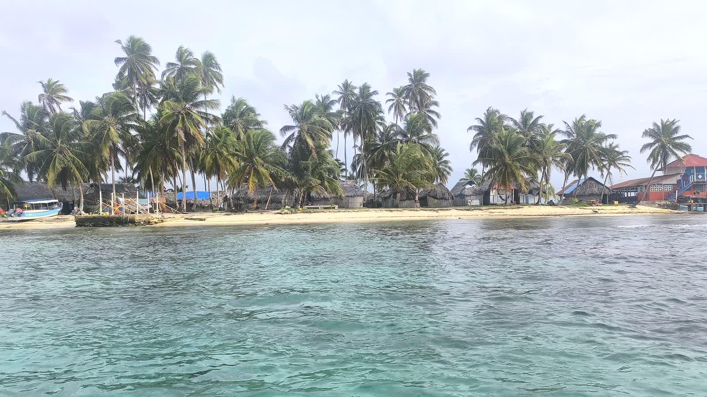

Kostarika 16 dní / 15 nocí
Pacifik, sopky, prales i termální prameny
od 3 150 USD / osoba
od 3 600 USD / osoba
6 osob
únor 2027
Trasa
SJO → Tárcoles → Manuel Antonio → Uvita → Llano de Cortés → Rincón de la Vieja → La Fortuna / Arenal → Grecia → SJO
Zahrnuto v ceně
15 nocí ubytování, auto a průvodce 16 dní, benzín, parkování a mýtné, transfery na letiště, Tárcoles, Manuel Antonio, Marino Ballena, Nauyaca, Llanos de Cortés, Rincón de la Vieja, Arenal, termální prameny Los Lagos, daň, pojištění
Strava, letenky a volitelné aktivity (visuté mosty, zipline, La Fortuna aj.) nejsou v ceně.

Kostarika – karibská část 14 dní / 13 nocí
Tortuguero, karibské pláže, Arenal a Tárcoles
od 2 550 USD / osoba
od 2 900 USD / osoba
6 osob
únor 2027
Trasa
SJO → Turrialba → Irazú → Cartago → Limón → Puerto Viejo → Cahuita → Manzanillo / Gandoca → La Pavona → Tortuguero → La Fortuna / Arenal → Tárcoles → San José → SJO
Program zahrnuje mimo jiné
Coffee Tour Turrialba, Irazú, karibské pláže, Tortuguero, sopka Arenal, krokodýlí řeka Tárcoles, San José

Panama 14 dní / 13 nocí
Emberá, Guna Yala, Colón, Portobelo, El Valle de Antón, Panama City
od 2 200 USD / osoba
od 2 300 USD / osoba
6 osob
až 15 osob
Trasa
Panama City → Emberá → Guna Yala (Senidub) → Colón / Portobelo → San Lorenzo → El Valle de Antón → Panama City
Zahrnuto v ceně
průvodce a auto po celou dobu, ubytování (La República, Colón, dům El Valle), 3 dny Emberá a 2 dny Guna Yala včetně stravy, Miraflores, Metropolitní park, San Francisco de Asís, Portobelo, San Lorenzo, Sleeping Indian, lodní doprava, benzín, hraniční poplatky, daň, pojištění

Nikaragua 16 dní / 15 nocí
Corn Islands, Somoto, Granada, León, Ometepe
od 2 700 USD / osoba
květen–listopad
od 2 830 USD / osoba
prosinec–duben
6 osob
únor 2027
Trasa
San José → Managua → Bluefields → Corn Islands → Somoto → Granada → León → Ometepe → Rivas → San José
Hlavní body programu
Managua, Bluefields, Corn Islands (3 noci, 4× čtyřkolky), Cañón de Somoto, Granada, León, Ometepe (Concepción, Ojo de Agua), návrat do Kostariky